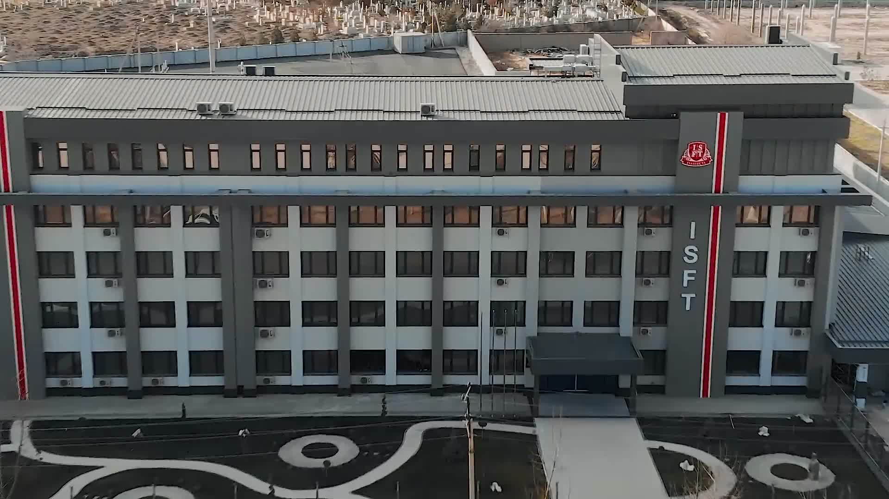

3D virtual sayohat
Institut binosining interaktiv, suratlar asosida yaratilgan taxminiy 3D modeli.
Sayohatni boshlash →Ta’lim imkoniyatlarini kashf eting. Institut bilan tanishing, 3D virtual sayohatga chiqing va o‘zingizni qiziqtirgan yo‘nalishni tanlang.
Institut bilan tanishish uchun barcha bo‘limlar bir joyda.

Institut binosining interaktiv, suratlar asosida yaratilgan taxminiy 3D modeli.
Sayohatni boshlash →
Ikkinchi taqdimot orqali asosiy o‘quv yo‘nalishlarini ko‘ring.
Prezentatsiyani ko‘rish